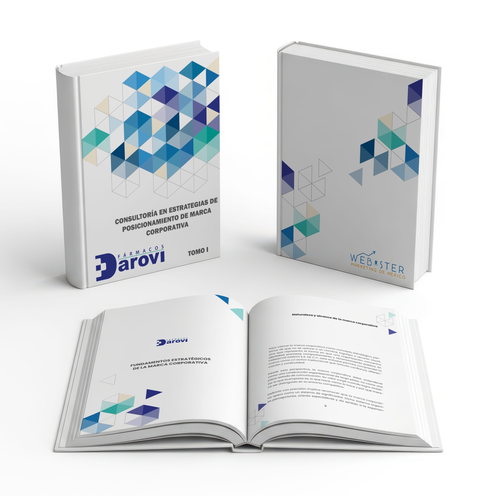

CONSULTORÍA · LECTOR DIGITAL
Consultoría en Estrategias de Posicionamiento de Marca Corporativa
Desarrollado para Fármacos Darovi S.A. de C.V.
Consulta el estudio completo en una experiencia de lectura página a página, optimizada para computadora y teléfono. El lector conserva la composición editorial de los dos tomos y añade navegación, zoom y un paso de página tridimensional.
2 tomos
622 páginas
Sólo lectura
Vista de consulta: los PDF originales no forman parte de este sitio.

TOMO I · 253 páginas
TOMO II · 369 páginas
LECTURA DEL ESTUDIO
Lector página a página
Usa las flechas del teclado o los controles laterales. En móvil, desliza horizontalmente. Amplía el contenido cuando necesites leer un detalle.
Desliza para cambiar de página